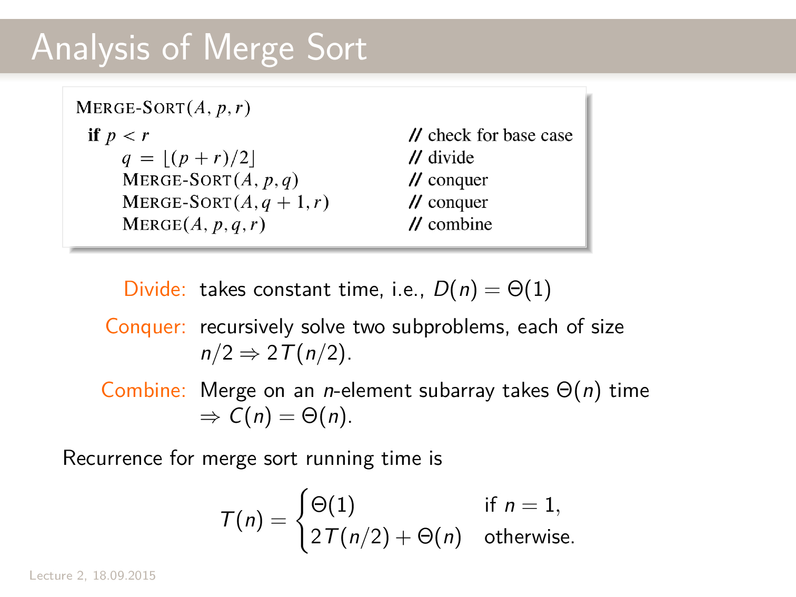
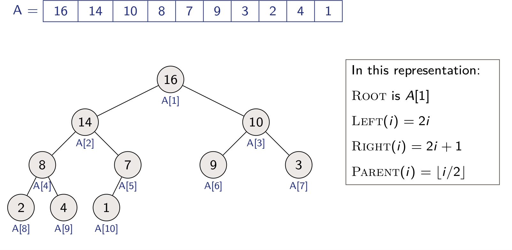

Algorithms
Table of Contents
- 1. Week 1
- 2. Week 2
- 3. Week 3
- 4. Week 4
- 5. Week 5
- 6. Week 6
- 7. Week 7
1 Week 1
1.1 Definition of algorithm
- Relation between an input and an ouptut
- Tool to solve a computational problem
1.2 Instance of a problem
Input of the problem. Examples :
- Sorting problem, instance : <32,54,65,23,54>
- Sum of all numbers to n : 4, n ≠ instance
2 Week 2
2.1 Insertion sort algorithm
for j = 2 to A.length key = A[j] // Insert A[j] into the sorted sequance A[1..j-1] i = j -1 while i > 0 and A[i] > key A[i+1] = A[i] i = i -1 A[i+1] = key
2.2 Loop Invariant -> prove corectness of algorithm
- Loop invariant : "a statement that is satisfied during the loop"
- Need to verify :
- Initialization : True at the beginning of the 1st iteration of the loop
- Maintenance : If it is true before an iteration of of the loop, it remains true before the next iteration
- Termination : When the loop terminates, the invariant gives us a useful property that helps show that the algorithm is correct
2.2.1 Example 1 : Sum up to n
The algorithm is the following :
CalculateSum (n):
ans = 0 for i = 1,2,..,n ans = ans + i return ans
- Loop invariant : At the start of each iteration \(ans = (i-1) * i/2\)
- Initialization : At the begining of the first iteration, \(i =1\) and \(ans = 0 = i(i -1)/2)\) so the invariant is satisfied
- Maintenance : Suppose invariant true at the beginning of iteration when \(i=k\), i.e, \(ans = (k-1)k/2\). Then the iteration updates \(ans\) by adding \(k\), i.e., \(ans = (k-1)k/2 +k = k(k+1)/2\) so incrementing \(i\) then for next iteration preserves the loop invariant.
- Termination : When the loop terminates \(i=n+1\). Hence the algorithm returns \(ans = n(n+1)/2\)
2.2.2 Example 2 : Insertion sort


2.3 Divide and conquer approach
2.3.1 Principle :
- Divide the problem into a number of subproblems that are smaller instances of the same problem
- Conquer the subproblems by solving them recursively. If the subproblem sizes are small enough, however, just solve the subproblems in a straightforwad manner
- Combine the solutions to the subproblems into the solution for the original problem
2.3.2 Application on merge and sort :
To sort \(A[p...r]\):
- Divide by splitting into two subarrays \(A[p...q]\) and \(A[q+1,...r]\), whre \(q\) is the halfway point of \(A[p..r]\)
- Conquer by recursively sorting the two subarrays \(A[p..q]\) and \(A[q+1,...r]\)
- Combine by mergie the two sorted subarrays \(A[p...q]\) and \(A[q+1,...r]\) to produce a single sorted subarray \(A[p...r]\)
Merge-Sort \((A,p,r)\)
if p < r //check for base case q = floor((p+r)/2) // divide Merge-Sort(A,p,q) // conquer Merge-Sort(A,q+1,r) //conquer Merge(A,p,q,r) // combine
Merge (\(A\),\(p\),\(q\),\(r\))
n_1 = q - p + 1 n_2 = r - q let L[1..n_1+1] and R[1..n_2+1] be new arrays for i = 1 to n_1 L[i] = A[p+i-1] for j = 1 to n_2 R[j] = A[q+j] L[n_1+1]= infinity R[n_2 +1]= infinity i = 1 j = 1 for k = p to r if L[i] <= R[j] A[k] = L[i] i = i +1 else A[k] = R[j] j = j +1
2.3.2.1 Corectness
- What does merge(A,p,q,r) do ?
- It takes array \(A\) and indexes \(p \le q < r\) s.t. \(A[p...q]\) and \(A[q+1...r]\) are sorted.
- Then it outputs \(A[p...r]\) contains the same elements in sorted order
- Proof by induction on \(n = r - p\) :
- Base case : \(n = 0\), in this case \(r = p\) so \(A[p...r]\) (single element) is trivially sorted.
- Inductive case : assume statement true \(\forall\ n \in \{0,1,...,n-1\}\) and
prove true for \(n=k\)
- By induction hypothesis ( \(q - p < n\) ) Merge-Sort(A,p,q) and Merge-Sort(A,q+1,r) sucessfully sort the two subarrays.
- Therefore a correct merge procedure will sucessfully sort \(A[p...q]\) as required.
2.3.2.2 Time analysis

2.3.3 Analysis of divide-and-conquer algorithms
Use a recurrence equation to describe the running time :
- Let \(T(n)\) = "running time on a problem of size \(n\)"
- If \(n\) is small enough say \(n\le c\) for some constant \(c\) then \(T(n) = \Theta(1)\) (by brute force)
- Otherwise, suppose we divide into \(a\) sub problems each size \(n/b\) (conquer step)
- Let \(D(n)\) be the time to divide and let \(C(n)\) the time to combine solutions
- We get the reccurence : \(T(n) = \Theta(1)\) if \(n\le c\), else \(T(n) = aT(n/b)+D(n)+C(n)\)
3 Week 3
Consider the following recurrence :
\(T(n) = c\) if \(n = 1\)
\(T(n) = 2T(n/2) + c \cdot n\) otherwise
Note that this reccurence upper bounds and lower bounds the reccurence for Merge-Sort by selecting \(c\) sufficiently large and small, respectively.
Three solving techiques :
3.1 The substitution method
- Guess the form of the solution
- Use mathematical induction to find the constant (substition method in the book)
A qualified guess is that \(T(n) = \Theta (n \log n)\).
- and show that the solution works
- First upper bound :
We want to prove there exists \(a > 0\) s.t \(T(n) \le a \cdot n \cdot \log n\)
\(\forall n \ge 2\)
- Base case : For any constant \(n \in \{2,3,4\}\), \(T(n)\) has a constant value, selecting a larger than this value will satisfy the base cases when \(n \in \{2,3,4\}\).
Inductive step : Assume statement true \(\forall n \{2,3,...,k-1\}\) and prove the statement for \(n=k\)
\begin{align*} T(n) &= 2T(n/2) + c \cdot n \\ &\le 2 \cdot \frac{an}{2} \log(n/2) + c \cdot n = a \cdot n \log(n/2) + c \cdot n \\ &= a \cdot n \log n -a \cdot n + c \cdot n \\ &\le a \cdot n \log n \text{ (if we select $a \ge c$)} \end{align*}We can thus select \(a\) to be a positive constant so taht both the base cases and the inductive step holds. Hence, \(T(n) = O(n\log n)\).
- Second lower bound :
- We want to prove there exists a constant \(b > 0\) s.t \(T(n) \ge b \cdot n \cdot \log n\) \(\forall n \ge 0\)
- Base case : For \(n=1,T(n)=c\) and \(b \cdot n \log n =0\) so the base case is satisfied for any b.
Inductive step : Assume statement true \(\forall n \in \{0,1,...,k-1\}\) and prove the statement for \(n =k\)
\begin{align*} T(n) &= 2T (n/2) + c \cdot n\\ &\ge 2 \cdot \frac{b\cdot n}{2} \log(n/2) + c \cdot n = b \cdot n \log(n/2) + c \cdot n\\ &= b \cdot n \log n - b \cdot n + c \cdot n \\ & \ge b \cdot n \log n \text{ (if we select $b \le c$)} \end{align*}
- First upper bound :
We want to prove there exists \(a > 0\) s.t \(T(n) \le a \cdot n \cdot \log n\)
\(\forall n \ge 2\)
We can thus select \(b\) to be positive constant so that both the base cases and the inductive step holds. Hence, \(T(n) = \Omega(n\log n)\).
- Other example
Prove that \(T(n) = O(n)\) First \(\exists c\) s.t.
\begin{align*} T(n) \le F(n)\\ \text{and}\\ F(n) = c \text{ if $n=0, n=1$, else } F(\frac{n}{4} +1 ) + F(\frac{3n}{4} -1) + c \end{align*}We shall prove that \(F(n) = O(n)\) claim : there exists constants \(b',b > 0\) and \(n_0 \ge 0\) s.t. \( \forall n \ge n_0\) \(F(n) \le b \cdot n - b'\)
Proof : Inductive step : Assume \(F(n) = b \cdot n\) \(\forall n \in \{n_0,...k-1\}\) prove true for \(n=k\).
\begin{align*} F(n) &= F(\frac{n}{4} +1) + F(\frac{3n}{4} -1) + C \\ &= b(\frac{n}{4} + 1) b' + b (\frac{3n}{4} -1) b' + C\\ &= b \cdot n + c - 2b'\\ &\le b \cdot n - b' \text{ if $ b' \ge C$} \end{align*}- Again other example :
\(T(n) = \Theta(1)\) if \(n=1\)
\(8 T(n/2) + c \cdot n^2\) if \(n > 1\)
Prove that \(T(n)\) is \(O(n^3)\).
Claim : \(\exists d > 0\) and \(n_0 > 0\) s.t. \(T(n) \le d n^3 \forall n \ge n_0\)
Base case: for \(n=1,...,k\) \(T(1), T(2) ... T(k)\) I can always select \(d \ge max \left\lbrace T(1), T(2),... T(k) \right\rbrace\)
_Inductive step__ :
\begin{align*} T(n) = 8 \cdot T(n/2) + c \cdot n^2 \\ \le 8 \cdot d \cdot (n/2)^3 + c \cdot n^2 \\ = d \cdot n^3 + c \cdot n^2 \end{align*}How to remove the low order terms ? We add to our claim a \(-d' \cdot n^2\) s.t. \(T(n) \le d n^3 - d' \cdot n^2 \forall n \ge n_0\). Now
\begin{align*} T(n) = 8 \cdot T(n/2) + c \cdot n^2 \\ \le d \cdot n^3 - 2 \cdot d' \cdot n^2 + c \cdot n^2\\ \le d \cdot n^3 - d' \cdot n^2 \text{if $d' \ge c$} \end{align*}3.2 The recursion tree method


- Examples to do with this method :
- \(T(n) = 2 T(n/2) + c \cdot n^2\), cost of base root \(cn^2\), but cost of last root : \(cn\)
3.3 The master method
Used to black-box solve reccurences of form \(T(n) = a \cdot T(n/b) + f(n)\) (doesn't work with \(T(n) = T(n/3) + T(2n/3) + cn\) for example).
Theorem (Master theorem)
Let \(a \ge 1\) and \(b > 1\) be constants, let \(T(n)\) be defined on the nonnegative integers by the reccurence :
\begin{align*} T(n) = a \cdot T(n/b) + f(n) \end{align*}Then, \(T(n)\) has the following asymptotic bounds :
- If \(f(n) = O(n^{\log_b a- \epsilon})\) for some constant \(\epsilon > 0\), then \(T(n) = \Theta(n^{\log_b a})\)
- If \(f(n) = \Theta(n^{\log_b a})\), then \(T(n) = \Theta(n^{\log_b a} \log n)\)
- If \(f(n) = \Omega(n^{\log_b a+\epsilon})\) for some constant \(\epsilon > 0\) and if \(a \cdot f(n/b) \le c \cdot f(n)\) for some constant \(c < 1\) and all sufficiently large \(n\), then \(T(n) = \Theta(f(n))\)
4 Week 4
4.1 Maximum-subarray problem
"If we let \(A[i]\) = (price after day \(i\)) - (price after day \(i-1\)) then if the maximum subarray is \(A[i..j]\) then we should have bought just before day \(i\) and sold just after day \(j\).
Input : An array \(A[1...n]\) of numbers
Output Indices \(i\) and \(j\) such that \(A[i...j]\) has the greatest sum of any nonempty, contiguous subarray of \(A\), along with the sum of the values in \(A[i...j]\).
4.1.1 Brute force
Simply check all possible subarrays.
\(\binom{n}{2} = \Theta (n^2)\) many.
Maximum-subarray-slow \((A[1...n])\)
B.val = - infinity, B.i = 1, B.j = n for i = 1 to n tmp = 0 for j = i to n tmp = tmp + A[j] if tmp > B.val B.val = tmp B.i = i B.j = j return (B.i,B.j.B.val)
Running time is \(\Theta(n^2)\) and we use \(\Theta(n)\) space.
4.1.2 Divide and conquer
- Divide the subarray into two subarrays of as equal size as possible. Find the midpoint mid of the subarrays, and consider the subarrays \(A\)[low.. mid] and \(A\)[mid+1…high].
- Conquer by finding maximum subarrays of \(A\)[low . . . mid] and \(A\)[mid + 1 . . . high].
Combine by finding a maximum subarray that crosses the midpoint,and using the best solution out of the three
FIND-MAXIMUM-SUBARRAY \((A,low,high)\)
if high == low return (low, high, A[low]) // base case: only one element else mid = ceil((low + high)/2) (left-low, left-high, left-sum) = FIND-MAXIMUM-SUBARRAY(A, low, mid) (right-low, right-high, right-sum) = FIND-MAXIMUM-SUBARRAY(A, mid + 1, high) (cross-low, cross-high, cross-sum) = FIND-MAXIMUM-CROSSING-SUBARRAY(A,low,mid,high) if left-sum >= right-sum and left-sum >= cross-sum return (left-low, left-high, left-sum) else if right-sum >= left-sum and right-sum >= cross-sum return (right-low, right-high, right-sum) else return (cross-low, cross-high, cross-sum)
4.1.2.1 Time analysis
Assume that we can find max-crossing-subarray in time \(\Theta(n)\) :
- Divide takes constant time, i.e, \(D(n) = \Theta(1)\)
- Combine time dominated by find-max-crossing-subarray, \(C(n) = \Theta(n)\)
- Conquer recusively solve two subproblems, each of size \(n/2\), \(T(n/2)\).
so \(T(n)=\Theta)n \log n)\)
4.1.2.2 Crossing subarray
- Any subarray crossing the midpoint A[mid] is made of two subarrays \(A[i...mid]\) and \(A[mid + 1,...,j]\) where \(low \le i \le mid\) and \(mid < j \le high\)
- Find maximum subarrays of the form \(A[i...mid]\) and \(A[mid + 1...j]\) and then combine them.
FIND-MAXIMUM-CROSSING-SUBARRAY \((A,low,mid,high)\)
//Find a maximum subarray of the form A[i...mid] left-sum = - infinity sum = 0 for i = mid downto low sum = sum + A[i] if sum > left-sum left-sum = sum max-left = i //Find a maximum subarray of the form A[mid+1...j] right-sum = - infinity sum = 0 for j = mid + 1 to high sum = sum + A[j] if sum > right-sum right-sum = sum max-right = j // Return the indices and the sum of the two subarrays. return (max-left, max-right, left-sum + right-sum)
4.2 Matrix multiplication
Multiply two \(n\times n\) matrices. \(AB=C\)
\(c_{ij} = \sum\limits_{k=1}^n a_{ik}b_{kj}\)
4.2.1 Naive algorithm
SQUARE-MAT-MULT \((A,B,n)\)
let C be a new n x n matrix for i = 1 to n for j = 1 to n cij = 0 for k = 1 to n cij = cij + aik*bkj return C
Running time : \(\Theta(n^3)\)
Space : \(\Theta(n^2)\)
4.2.2 Divide-and-Conquer
- Divide each of \(A,B,C\) into four \(n/2 \times n/2\) matrices: so that :
- Conquer : Since
We recursively solve 8 matrix multiplications that each multiply two \(n/2 \times n/2\) matrices.
- Combine Make the additions to get \(C\)
4.2.2.1 Pseudocode
REC-MAT-MULT \((A,B,n)\)
let C be a new n x n matrix if n == 1 c11 = a11 * b11 else partition A,B and C into n/2 x n/2 submatrices c11 = REC-MAT-MULT(A11,B11,n/2) + REC-MAT-MULT(A12,B21,n/2) c12 = REC-MAT-MULT(A11,B12,n/2) + REC-MAT-MULT(A12,B22,n/2) c21 = REC-MAT-MULT(A21,B11,n/2) + REC-MAT-MULT(A22,B21,n/2) c22 = REC-MAT-MULT(A21,B12,n/2) + REC-MAT-MULT(A22,B22,n/2) return C
4.2.2.2 Analysis
Let \(T(n)\) be the times to multiply two \(n \times n\) matrices.
- Base case: \(n=1\). Perform one scalar multiplication: \(\Theta(1)\)
- Recursive case: \(n>1\)
- Dividing takes \(\Theta(1)\) time if careful and \(\Theta(n^2)\) if simply copying
- Conquering makes 8 recursive calls, each multiplying \(n/2 \times n/2\) matrices : \(8T(n/2)\)
- Combining takes time \(\Theta(n^2)\) time to add \(n/2 \times n/2\) matrices.
Reccurence is :
\begin{align*} T(n) &= \Theta(1) \text{ if $n=1$}\\ T(n) &= 8T(n/2)+\Theta(n^2) \text{ if $n>1$} \end{align*}So \(T(n) = \Theta(n^3)\) (from master method)
4.2.3 Strassen's algorithm
- Divide eachf \(A,B,C\) into four \(n/2 \times n/2\) matrices: so that :
\(\begin{pmatrix} C_{11} & C_{12}\\ C_{21} & C_{22} \end{pmatrix} = \begin{pmatrix} A_{11} & A_{12}\\ A_{21} & A_{22} \end{pmatrix} \cdot \begin{pmatrix} B_{11} & B_{12}\\ B_{21} & B_{22} \end{pmatrix}\)
- Conquer : calculate recusively 7 matrix multiplications, each of two \(n/2 \times n/2\) matrices :
- Combine Let
4.2.3.1 Time analysis
- Base case \(n = 1\) \(\Rightarrow\) it takes time \(\Theta(1)\)
- Recursive case: \(n > 1\)
- Dividing takes time \(\Theta(n^2)\)
- Conquering makes 7 recursive calls, each multiplying \(n/2 \times n/2\) matrices \(\Rightarrow 7 T(n/2)\)
- Combining takes time \(\Theta(n^2)\) time to add \(n/2 \times n/2\) matrices.
Reccurence is
\begin{align*} T(n) = \Theta(1) \text{ if $n=1$}\\ T(n) = 7T(n/2) + \Theta(n^2) \text{ if $n > 1$} \end{align*}Master method \(\Rightarrow T(n) = \Theta(n^{\log_2 7})\)
Best we could hope for is \(\Theta(n^2)\) because we need to at least look at each entry of the matrices.
5 Week 5
5.1 Heap
Heap \(A\) ( not garbage-collected storage) is a nearly complete binary trees
- height \(\lceil \log_2(n)\rceil\)
- Atmost one node has one child
(Max)-Heap property: key of \(i\) 's children is smaller or equal to \(i\) 's key
(Min)-Heap property: key of \(i\) 's children is greater or equal to \(i\) 's key
5.1.1 Root :
- Max-Heap \(\Rightarrow\) maximum element is the root
- Min-heap \(\Rightarrow\) minimum elememnt is the root
5.1.2 Height :
Height of node = # of edges on a longest simple path from the node down to a leaf
Height of heap = height of root = \(\Theta (\log n)\)
5.1.3 Storage :
Use that tree is almost complete to store it in array 
5.1.4 Operations
5.1.4.1 MAX-HEAPIFY
MAX-HEAPIFY : given an \(i\) such that the subtrees of \(i\) are heaps, it ensures that the subtree rooted at \(i\) is a heap satisfying the heap property.
Algorithm :
- Compare \(A[i],A[Left(i)],A[Right(i)]\)
- If necessary, swap \(A[i]\) with the largest of the two children to preserve heap property
- Continue this process of comparing and swapping down the heap, until subtree rooted at \(i\) is max-heap
MAX-HEAPIFY \((A,i,n)\)
l = Left(i) r = Right(i) if l <= n and A[l] > A[i] largest = l else largest = i if r <= and A[r] > A[largest] largest = r if largest != i exchange A[i] with A[largest] MAX-HEAPIFY(A,largest,n)
Running time : \(\Theta(\) height of \(i)=O(\log n)\)
Space : \(\Theta(n)\)
5.1.4.2 Building a heaps
Given unordered array \(A\) of length \(n\), BUILD-MAX-HEAP(A,n)
BUILD-MAX-HEAP \((A,n)\)
for i = floor(n/2) downto 1 MAX-HEAPIFY(A,i,n)
Analysis
Worst case :
- Simple bound : \(O(n)\) calls to MAX-HEAPIFY, each of wich takes \(O(\log n)\) time \(\Rightarrow O(n \log n)\) in total
- Tighter anaysis : Time to run MAX-HEAPIFY is linear in the height of the node it's run on. Hence the time bounded by :
\(\sum\limits_{h=0}^{\log n} \lbrace \text{# nodes of height } h \rbrace O(h) = O(n \sum\limits_{h=0}^{\log n} \frac{h}{2^h})\)
which is \(O(n)\) since \(\sum\limits_{h=0}^{\infty} \frac{h}{2^h} = \frac{1/2}{(1-1/2)^2} = 2\)
Correctness
Loop invariant : At start of every iteration of for loop, each node \(i+1,i+2,...,n\) is root of max-heap
Maintenance :
- Children of node \(i\) are indexed higher than \(i\), so by the loop invariant, they are both roots of max-heaps
- Therefore, MAX-HEAPIFY makes node \(i\) a max-heap root (so \(i,i+1,...,n\) are all roots of max-heaps)
- Hence, the invariant stays true when decredementing \(i\) at the beggining of the next iteration
Termination:
- When \(i = 0\), the loop terminates
- By the loop invariant, each node, notably node 1, is the root of a max-heap
5.2 Heapsort
- Builds a max-heap from the array
- Starting with the root (the maximum element), the algorithm places the maximum element into the correct place in the array by swapping it with the element in the last position in the array
- "Discard" this last node (knowing that it is in its correct place) by decreasing the heap size, and calling MAX-HEAPIFY on the new (possibly incorrect-placed) root
- Repeat this "discarding" process until only one node (the smallest element) remains, and therefore is in the correct place in the array
5.2.1 Pseudocode :
HEAPSORT \((A,n)\)
BUILD-MAX-HEAP(A,n) for i = n downto 2 exchange A[1] with A[i] MAX-HEAPIFY(A,1,i-1)
5.2.2 Analysis
- BUILD-MAX-HEAP : \(O(n)\)
- for loop: \(n-1\) times
- exchange elements: \(O(1)\)
- MAX-HEAPIFY: \(O(\lg n)\)
Total time : \(O(n \lg n)\)
5.3 Priorty queue
- Maintains a dynamic set \(S\) of elements
- Each set element has a key - an associated value that regulates its importance
- Operations :
- INSERT(S,x): inserts element \(x\) into \(S\)
- MAXIMUM(S) : returns element of \(S\) with largest key
- EXTRACT-MAX(S): removes and returns element of \(S\) with largest key
- INCREASED-KEY(S,x,K): increases value of element \(x\) 's key to \(k\); assume \(k \le x\) 's current key value.
5.3.1 Operations
5.3.1.1 HEAP-MAXIMUM
Symply return the root in time \(\Theta(1)\)
HEAP-MAXIMUM \((A)\)
Return A[1]
5.3.1.2 HEAP-EXTRACT-MAX(A,n)
- Make sure heap is not empty
- Make a copy of the maximum element (the root)
- Make the last node in the tree the new root
- Re-heapify the heap, with one fewer node
Analysis : Constant-time assignments plus time for MAX-HEAPIFY
So \(O(\lg n)\)
HEAP-EXTRACT-MAX \((A,n)\)
if n < 1 error "heap underflow" max = A[1] A[1] = A[n] n = n - 1 MAX-HEAPIFY(A,1,n) return max
5.3.1.3 HEAP-INCREASE-KEY(A,i,key)
Given a heap \(A\), index \(i\), and a new value \(key\)
- Make sure \(key >= A[i]\)
- Update \(A[i]\) 's value to \(key\)
- Traverse the tree upward comparing new key to the parent and swapping keys if necessary, until the new key is smaller than the parent's keys
Analysis : Upward path frome node \(i\) has length \(O(\lg n)\) in an \(n\) -element heap.
So \(O(\lg n)\)
HEAP-INCREASE-KEY \((A,i,key)\)
if key < A[i] error "new key is smaller than current key" A[i] = key while i > 1 and A[Parent(i)] < A[i] exchange A[i] with A[Parent(i)] i = Parent(i)
5.4 Stacks
Last in, first out.
- Insert operation called PUSH(\(S,x\))
- Delete operation called POP(\(S\))
5.4.1 Implementation
Implementation using arrays: \(S\) consists of elements \(S[1,...,S.top]\)
- \(S[1]\) element at the bottom
- \(S[S.top]\) element at the top
5.4.2 Operations
STACK-EMPTY \((S)\)
if S.top = 0 return true else return false
PUSH \((S,x)\)
S.top = S.top + 1 S[S.top] = x
POP \((S)\)
if STACK-EMPTY(S) error "underflow" else S.top = S.top -1 return S[S.top+1]
All these operations are \(O(1)\)
5.5 Queue
First-in, first-outputs
- Insert operation called ENQUEUE(\(Q,x)\)
- Delete operation called DEQUEUE\((Q)\)
5.5.1 Implementation
Implementation using arrays: \(Q\) consists of elements \(S[Q.head,...,Q.tail-1]\)
- \(Q.head\) points at the first elements
- \(Q.tail\) points at the next location where a newly arrived alement wille be placed
5.5.2 Operations
ENQUEUE \((Q,x)\)
Q[Q.tail] = x if Q.tail == Q.length Q.tail = 1 else Q.tail = Q.tail + 1
DEQUEUE \((Q,x)\)
x = Q[Q.head] if Q.head == Q.length Q.head = 1 else Q.head = Q.head + 1 return x
All these operations are \(O(1)\)
5.6 Stacks and queues
5.6.1 Pros
- Very efficent
- Natural operations
5.6.2 Cons
- Limited support: for example, no search
- Implementations using arrays have a fixed capacity
5.7 Linked list
Objects are arranged in a linear order : not indexes in array, but pointer to next object in each object.
A list can be :
- Single linked or double linked
- Sorted or unsorted
- etc.
Example : An element in a double linked list :
- x.key (key value)
- x.prev (point to previous element)
- x.next (points to next element)
5.7.1 Searching in a linked list
Given \(k\) return pointer to first element with key \(k\)
LIST-SEARCH \((L,k)\)
x = L.head while x != nil and x.key != k x = x.next return x
Running time : \(O(n)\)
If no element with key \(k\) ? Returns nil
5.7.2 Inserting into a linked list
Insert a new element \(x\)
LIST-INSERT \((L,x)\)
x.next = L.head
if L.head != nil
L.head.prev = x
L.head = x
x.prev = NIL
Running time : \(O(1)\)
5.7.3 Deleting from a linked list
Given a pointer to an element \(x\) removes it from \(L\)
LIST-DELETE \((L,x)\)
if x.prev != nil x.prev.next = x.next else L.head = x.next if x.next != nil x.next.prev = x.prev
Running time : \(O(1)\)
5.7.4 TODO Using Sentinels
Add image for clarity
We add a "sentinel" called L.nil which
- Points to itself for prev and next if list is empty
- Next points to first element of list (head), prev points to last element of the list and last element of the list points to it
Then we can symplify delete and insert by :
LIST-DELETE \((L,x)\)
x.prev.next = x.next x.next.prev = x.prev
LIST-INSERT \((L,x)\)
x.next = L.nil.next L.nil.next.prev = x L.nil.next = x x.prev = L.nil
5.7.5 Summary
- Dynamic data structure without predefined capacity
- Insertion : \(O(1)\)
- Deletion : \(O(1)\) (if double linked)
- Search : \(O(n)\)
6 Week 6
6.1 Binary Search trees
Encodes a strategy whatever number we look for.
Key property:
- if \(y\) is in the left subtree of \(x\) then \(y.key < x.key\)
- if \(y\) is in the right subtree of \(x\) then \(y.key \ge x.key\)
Height (\(h\)) is the number of edges in longest path from root to leaf.
Basic operations take time proportional to height: \(O(h)\)
Each element \(x\) has :
- \(x.left\) : pointer to left child
- \(x.right\) : pointer to right child
- \(x.p\) : pointer to parent
- \(x.key\) : key
6.1.1 Searching
TREE-SEARCH \((x,k)\)
if x == NIL or k == key[x] return x if k < x.key return TREE-SEARCH(x.left,k) else return TREE-SEARCH(x.right,k)
Running time : \(O(h)\)
6.1.2 Min and Max
By key property :
- Minimum is located in leftmost node
- Maximum is located in rightmost node
TREE-MINIMUM \((x)\)
while x.left != NIL x = x.left return x
TREE-MAXIMUM \((x)\)
while x.right != NIL x = x.right return x
Running time : \(O(h)\)
6.1.3 Sucessor and Predecessor
Sucessor of a node \(x\) is the node \(y\) sutch that \(y.key\) is the
"smallest key" > \(x.key\)
Two case :
- \(x\) has a non-empty right subtree → \(x\) 's sucessor is the minimum in the right subtree
- \(x\) has an empty right subtree → As long as we go to the left up the tree we're visiting smaller keys. \(x\) 's sucessor is \(y\) is the node that \(x\) is the predecessor of.
TREE-SUCESSOR \((x)\)
if x.right != NIL return TREE-MINIMUM(x.right) y = x.p while y != NIL and x == y.right x = y y = y.p return y
Running time : \(O(h)\)
Predecessor is symmetric !
6.1.4 Printing
6.1.4.1 Inorder
- Print left subtree recursively
- Print root
- Print right subtree recursively
INORDER-TREE-WALK \((x)\)
if x != NIL INORDER-TREE-WALK(x.left) print key[x] INORDER-TREE-WALK(x.right)
Running time : \(\theta(n)\)
6.1.4.2 Preorder and Postorder
PREORDER-TREE-WALK \((x)\)
if x != NIL print key[x] PREORDER-TREE-WALK(x.left) PREORDER-TREE-WALK(x.right)
POSTORDER-TREE-WALK \((x)\)
if x != NIL POSTORDER-TREE-WALK(x.left) POSTORDER-TREE-WALK(x.right) print key[x]
6.1.5 Modifying
6.1.5.1 Inserting
- Search for \(z.key\)
- When arrived at \(nil\) insert \(z\) at that position
TREE-INSERT \((T,z)\)
y = NIL x = T.root while x != NIL y = x if z.key < x.key x = x.left else x = x.right z.p = y if y == NIL T.root = z // tree T was empty elseif z.key < y.key y.left = z else y.right = z
Running time : \(O(h)\)
6.1.5.2 Deleting
3 cases :
- If \(z\) has no children, remove it
- if \(z\) has one child, then make that child takes \(z\) 's position in the tree
- if \(z\) has two children, then find its sucessor \(y\) and replace \(z\) by \(y\)
We first need to define a helper function which replace subtree rooted at \(u\) with that rooted at \(v\)
TRANSPLANT \((T,u,v)\)
if u.p == NIL T.root = v elseif u == u.p.left u.p.left = v else u.p.right = v if v != NIL v.p = u.p
Then the actual deletion algorithm :
TREE-DELETE \((T,z)\)
if z.left == NIL TRANSPLANT(T,z,z.right) // z has no left child elseif z.right == NIL TRANSPLANT(T,z,z.left) // z has just a left child else // z has two children y = TREE-MINIMUM(z.right) // y is z's sucessor if y.p != z // y lies within z's right subtree but is not the root of this TRANSPLANT(T,y,y.right) y.right = z.right y.right.p = y // Replace z by y TRANSPLANT(T,z,y) y.left = z.left y.left.p = y
Running time : \(O(h)\)
6.2 Dynamic programming
Main idea :
- Remember calculations already made
- Saves enormous amounts of computation
6.2.1 Key element in designing a DP-algorithm
Optimal substructure :
- Show that a solution to a problem consists of making a choice, which leaves one or several subproblems to solve and the optimal solution solves the subproblems optimally ⇒ allows us to write a recursion
Overlapping subproblems :
- A naive recursive algorithm may revisit the same (sub)problem over and over.
- Top-down with memoization : Solve recursively but store each result in a table (only solves subproblems really required to find solution)
- Bottom-up Sort the subproblems and solve the smaller ones first; that way, when solving a subproblem, have already solved the smaller subproblems we need (can be better in term of memory)
6.3 Fibonacci numbers
basic resursive function : same calculations again and again ⇒ exponential time !
Solution ? Remember what we have down :
Two ways:
- Top-down with memoization
- Solve recursively but store each result in a table
- Memoizing is remembering what we have computed previously
- Bottom-up
- Sort the subproblems and solve the smaller ones first
- That way, when solving a subproblem, have already solved the smaller subproblems we need
6.3.1 Memoization
MEMOIZED-FIB \((n)\)
Let r = [0...n] be a new array for i = 0 to n r[i] = - infinity return MEMOIZED-FIB-AUX(n,r)
MEMOIZED-FIB-AUX \((n,r)\)
if r[n] >= 0 return r[n] if n = 0 or n = 1 ans = 1 else ans = MEMOIZED-FIB-AUX(n-1,r)+MEMOIZED-FIB-AUX(n-2,r) r[n] = ans return r[n]
Time analysis :
- Steps 1-3 in MEMOIZED-FIB takes times \(\Theta(n)\)
- Each call to MEMOIZED-FIB-AUX takes \(\Theta(1)\)
- Number of calls to MEMOIZED-FIB-AUX is \(\Theta(n)\)
- Total time is thus \(\Theta(n)\)
6.3.2 Bottom-updates
BOTTOM-UP-FIB \((n)\)
Let r = [0..n] be a new aray r[0] = 1 r[1] = 1 for i = 2 to n r[i] = r[i-1]+r[i-2] return r[n]
6.4 Rod cutting
Instance :
- A length \(n\) of a metal rod
- A table of prices \(p_i\) for rods of lengths \(i=1,...n\)
Objective : Decide how to cut the rod into pieces and maximize the price
6.4.1 Size of the problem
- There are 2n-1 possible solutions - either cut or do not cut after every length unit
- Need structure for an efficient algorithm
6.4.2 Structural theorem
If
- the leftmost cut in an optimal solution is after \(i\) units
- an optimal way to cut a solution of size \(n-i\) is into rods of sizes: \(s_1,s_2,...,s_k\)
Then, an optimal way to cut our rods is into rods of size: \(i,s_1,s_2,...,s_k\)
Proof
Feasability : Since \(s_1,s_2,...,s_k\) is a feasible solution for an instance of size \(n-i\):
\(\sum\limits_{j=1}^k s_j = n - i\)
Hence, \(i + \sum\limits_{j=1}^k s_j = n\)
Optimality: Let \(i,o_1,o_2,...,o_l\) be an optimal solution - exists by assumption. Recall that \(s_1,s_2,...,s_k\) is an optimal way to cut a rod of size \(n-1\), thus
\(\sum\limits_{j=1}^k p_{s_j} \ge \sum\limits_{j=1}^l p_{o_j}\)
Hence, \(p_i + \sum\limits_{j=1}^k p_{s_j} \ge p_i + \sum\limits_{j=1}^l p_{o_j}\)
6.4.3 First algorithm
if we let \(r(n)\) be the optimal revenu from a rod of length \(n\), then, by the strucural theorem, we can express \(r(n)\) recursively as follows
\(r(n) = 0\) if \(n = 0\)
\(r(n) = \text{max}_{1\le i \le n}\lbrace p_i + r(n-i)\rbrace\) otherwise \(n \ge 1\)
CUT-ROD \((p,n)\)
if n == 0 return 0 q = -infinity for i = 1 to n q = max(q,p[i]+ CUT-ROD(p,n-i)) return q
Procedure is extremly inefficient, exponential
6.4.4 Top-down algorithm
- Keep the recurive structure of the pseudocode
- Memoize (store) the result of every recursive call
- At each recursively call, try to avoid work using memoized results
MEMOIZED-CUT-ROD \((p,n)\)
let r[0..n] be a new array for i = 0 to n r[i] = -infinity return MEMOIZED-CUT-ROD-AUX(p,n,r)
MEMOIZED-CUT-ROD-AUX \((p,n,r)\)
if r[n] >= 0 return r[n] if n == 0 q == 0 else q = -infinity for i = 1 to n q = max(q,p[i]+MEMOIZED-CUT-ROD-AUX(p,n-i,r)) r[n] = q return q
- Initialization takes \(O(n)\) time
- Processing each sub-problems takes linear time in the number of sub-problems it evokes
- The time complexity is proportional to the numbers of nodes and edges in the subproblem graph
Time complexity : \(O(n^2)\)
6.4.5 Bottom-up
- Sort the sub-problems by size
- Solve the smaller ones first
- When reaching sub-problem, the smaller ones are already solved
BOTTOM-UP-CUT-ROD \((p,n)\)
let r[0..n] be a new array r[0] = 0 for j = 1 to n q = - infinity for i = 1 to j q = max(q,p[i]+r[j-i] r[j] = q return r[n]
Time complexity : \(O(n^2)\)
6.4.6 Analysis
- Choice: where to make the leftmost cut
- Optimal substructure: to obtain an optimal solution, we need to cut the remaining piece in an optimal way
Hence, if we let r (n) be the optimal revenue from a rod of length n, we can express \(r(n)\) recursively as follows
\(r(n) = 0\) if \(n = 0\)
\(r(n) = max_{1\le i \le n} \lbrace p_i + r(n-i)\rbrace\) otherwise if \(n \ge 1\)
- Overlapping subproblems: Solve recurrence using top-down with memoization or bottom-up which yields an algorithm that runs in time \(\Theta(n^2)\)
6.4.7 Optimal solution
- The above algorithms only return the optimal profit
- Sometimes one needs also to find an optimal solution
Approach
- Each cell of the memoization table corresponds to a decision: the location of the left most cut
- Store the decision corresponding to every cell in a separate table
EXTENDED-BOTTOM-UP-CUT-ROD \((p,n)\)
let r[0..n] and s[0..n] be new arrays r[0] = 0 for j = 1 to n q = - infinity for i = 1 to j q = p[i] + r[j-i] s[j] = i r[j] = q return r and s
- The table s stores the choices that lead to an optimal solution.
- These decicisions can be extracted from the table
PRINT-CUT-ROD-SOLUTION \((p,n)\)
(r,s) = EXTENDED-BOTTOM-UP-CUT-ROD(p,n) while n > 0 print s[n] n = n - s[n]
6.4.8 Summary
- We had a recursive formulation for the optimal value for our problem
\(r(n) = 0\) if \(n = 0\)
\(r(n) = max_{1\le i \le n} \lbrace p_i + r(n-i)\rbrace\) otherwise if \(n \ge 1\)
- Speed up the calculations by fillind in a table either "top-down with memoization" or with "bottom-up"
- Recovered an optimal solution using an additional table
6.5 Matrix-chain multiplication
6.5.1 Cost of matrix multiplication
\(A_{p,q} \times B_{q,r}\) = \(C_{p,r}\)
- Each cell of \(C\) requires \(q\) scalar multiplication
- In total : \(pqr\) scalar multiplication
6.5.2 Definition
- Input : A chain \(< A_1,A_2,...,A_n >\) of \(n\) matrices where for \(i=1,2,...,n\) matrix \(A_i\) has dimension \(p_{i-1} \times p_i\)
- Output : A full parenthesization of the product \(A_1A_2...A_n\) in a way that minimizes the number of scala multiplications.
- Remarks :
- We are not asked to calculate the product, only find the best parenthesization
- The parenthesization can significantly affect the number of multiplications
- Example :
- A product \(A_1A_2A_3\) with dimensions: \(50 \times 5\), \(5 \times 100\) and \(100 \times 10\)
- Calculating \((A_1A_2)A_3\) requires: \(50 · 5 · 100 + 50 · 100 · 10 = 75000\) scalar multiplications.
- Calculating \(A_1(A_2A_3)\) requires: \(5 · 100 · 10 + 50 · 5 · 10 = 7500\) scalar multiplications.
6.5.3 Optimal substructure
Theorem :
if :
- the outermost parenthesization in an optimal solution is : \((A_1A_2...A_i)(A_{i+1}A_{i+2}...A_n)\)
- \(P_L\) and \(P_R\) are optimal parenthesizations for \(A_1A_2...A_i\) and \(A_{i+1}A_{i+2}...A_n\) respectively
Then, \(((P_L)·(P_R))\) is an optimal parenthesizations for \(A_1A_2...A_n\)
Proof :
- Let \(((O_L)·(O_R))\) be an optimal parenthesization, where \(O_L\) and \(O_R\) are parenthesization for \(A_1A_2...A_i\) and \(A_{i+1}A_{i+2}...A_n\) respectively
- Let \(M(P)\) be the number of scalar multiplications required by a parenthesization
- Since \(P_L\) and \(P_R\) are optimal: \(M(P_L) \le M(O_L)\) and \(M(P_R) \le M(O_R)\)
6.5.4 Recursive formula
- Let \(m[i,j]\) be the optimal number of scalar multiplications for calulating \(A_iA_{i+1}....A_J\)
- \(m[i,j]\) can be expressed recusively as follows :
\(m[i,j] = 0\) if i = j
\(m[i,j] = min_{i\le k < j}\lbrace m[i,k]+m[k+1,j]+p_{i-1}p_kp_j\rbrace\) if i < j
- Each \(m[i,j]\) depend only on subproblems with smaller \(j-i\)
- A bottom-up algorithm should solve subproblems in increasing \(j-i\) order
6.5.5 Bottom-up algorithm
MATRIX-CHAIN-ORDER \((p)\)
n = p.length - 1 let m[1..n,1..n] and s[1..n,1..n] be new tables for i = 1 to n m[i,i] = 0 for l = 2 to n #l is the chain length for i = 1 to n-l+1 j = i + l -1 m[i,j] = infinity for k = 1 to j - 1 q = m[i,k] + m[k+1,j] + p[i-1]p[k]p[j] if q < m[i,j] m[i,j] = q s[i,j] = k return m and s
6.5.6 Print optimal solution
PRINT-OPTIMAL-PARENS \((s,i,j)\)
if i == j print "Ai" else print "(" PRINT-OPTIMAL-PARENS(s, i, s[i,j]) PRINT-OPTIMAL-PARENS(s,s[i,j]+1,j) print ")"
6.5.7 Summary
Choice where to make the outermost parenthesis
\((A_1...A_k)(A_{k+1}...A_n)\)
Optimal substructure : to obtain an optimal solution, we to parenthesize the two remaining expressions in a optimal way.
Hence, if we let \(m[i,j]\) be the optimal value for chain multiplication of matrices \(A_i,...,A_j\), we can express \(m[i,j]\) recusively as follows
\(m[i,j] = 0\) if \(i=j\)
\(m[i,j] = min_{j\le k < j} \lbrace m[i,k] + m[k+1,j] + p_{i-1}p_k p_j\rbrace\) otherwise if \(i < j\)
Overlapping subproblems: Solve reccurence using top-down with memoization or bottom-up which yields an algorithm that runs in time \(\theta(n^3)\)
7 Week 7
7.1 Longest common subsequence
Input : 2 sequences, \(X= < x_1,...x_m >\) and \(Y = < y_1,...,y_n >\)
Output : A subsequence common to both whose length is longest. (A subsequence doesn't have to be consecutive, but it has to be in order)
7.1.1 Brute force
For every subsequence of \(X\), check wether it's a subsequence of \(Y\)
Time : \(\Theta(n2^m)\)
- \(2^m\) subsequences of \(X\) to check
- Each subsequence takes \(\Theta(n)\) time to check: scan \(Y\) for first letter, from there scan for second, and so on
7.1.2 Dynamic programming
7.1.2.1 Choice
Start at the end of both words and move to the left step-by-step
Choice?
If the same, pick letter to be in the subsequence
If not the same, optimal subsequence can be obtained by moving a step to the left in one of the words.
Let \(X_i= < x_1 , x_2 , ... , x_i >\) and \(Y_i= < y_1,y_2,...,y_j >\)
Choice
if \(x_i = y_j\) then either
- OPT "matches" \(x_i\) with \(y_j\) and remaining OPT is in (\(X_{i-1},Y_{j-1})\)
- OPT is in \((X_{i-1},Y_j)\) or
- OPT is in \(X_i,Y_{j-1}\)
if \(x_i \neq x_j\) then either
- OPT is in \((X_{i-1},Y_j)\) or
- OPT is in \(X_i,Y_{j-1}\)
We prove that we can assume that OPT “matches” \(x_i\) with \(y_j\) if they are equal so we can simplify the first case
7.1.2.2 Optimal substructure
Let \(X_i\) and \(Y_j\) denote the prefixes \(< x_1,x_2,...,x_i >\) and \(< y_1,y_2,...,y_j >\)
Theorem :
Let \(Z_k= < z_1 , z_2 , ... , z_k >\) be any LCS of \(X_i\) and \(Y_j\)
- If \(x_i = y_j\) then \(z_k = x_i = y_j\) and \(Z_{k-1}\) is an LCS of \(X_{i-1}\) and \(Y_{j-1}\)
- If \(x_i \neq y_j\) \(z_k \neq x_i\) ⇒ \(Z\) is an LCS of \(X_{i-1}\) and \(Y_j\)
- If \(x_i \neq y_j\) \(z_k \neq y_j\) ⇒ \(Z\) is an LCS of \(X_i\) and \(Y_{j-1}\)
7.1.2.3 Recursive formulation
Define \(c[i,j] =\) length of LCS of \(X_i\) and \(Y_j\). We want \(c[m,n]\)
\begin{align*} c[i,j]=\begin{cases} 0 & \text{if $i=0$ or $j=0$}\\ c[i-1,j-1] + 1 & \text{if $i,j>0$ and $x_i=y_j$}\\ \text{max}(c[i-1,j],c[i,j-1]) & \text{if $i,j>0$ and $x_i \neq y_j$} \end{cases} \end{align*}7.1.2.4 Bottom-up pseudocode
LCS-LENGTH \((X,Y,m,n)\)
let b[1..m,1..n] and c[0..m,o..n] be new tables for i = 1 to m c[i,0] = 0 for j = 0 to n c[0,j] = 0 for i = 1 to m for j = 1 to n if x_i == y_j c[i,j]=c[i-1,j-1]+1 b[i,j] = "Top-left arrow" else if c[i-1,j] >= c[i,j-1] c[i,j] = c[i-1,j] b[i,j] = "Top arrow" else c[i,j] = c[i,j-1] b[i,j] = "right arrow" return c and b
- Time dominated by instructions inside the two nested loops which execute \(m\cdot n\) times
- Total time is \(\Theta(m\cdot n)\)
7.1.2.5 Printing solution pseudocode
PRINT-LCS \((b,X,i,j)\)
if i == 0 or j == 0 return if b[i,j] == "top left arrow" PRINT-LCS(b,X,i-1,j-1) print x_i else if b[i,j] == "top arrow" PRINT-LCS(b,X,i-1,j) else PRINT-LCS(b,X,i,j-1)
- Each recursive call decreases \(i + j\) by at least one.
- Hence, if we let \(n = i + j\), the time needed is at most
\(T(n) \le T(n − 1) + \Theta(1)\) which is \(O(n)\)
- We can thus print the found string in time \(\Theta(|X | + |Y |)\)
(the lower bound following from that \(T(n) \ge T(n − 2) + \Theta(1)\))
7.2 Optimal binary search trees
7.2.1 Idea
- Give sequence \(K= < k_1,k_2,...,k_n >\) of \(n\) distinct keys, sorted (\(k_1 < k_2 < ... < k_n\))
- Want to build a binary search tree from the keys
- For \(k_i\), have probability \(p_i\) that a search is for \(k_i\)
- Want BST with minimum expected shared cost
- Actual cost = # of items examined
For key \(k_i\), cost = \(\text{depth}_T(k_i) + 1\), where \(\text{depth}_T(k_i)\) denotes the depth of \(k_i\) in BST T
\begin{align*} \mathbb{E}[\text{search cost in }T] &= \sum\limits_{i=1}^n (\text{depth}_T(k_i) + 1 )p_i\\ &= 1+ \sum\limits_{i=1}^n (\text{depth}_T(k_i))p_i \end{align*}7.2.2 Observations
- Optimal BST might not have smallest height
- Optimal BST might not have highest-probability key at root
Build by exhaustive checking ?
- Construct each \(n-\) node BST
- For each put in keys
- Then compute expected search cost
- But there are exponentially many trees
7.2.3 Optimal substructure
A binary search tree can be built by first picking the root and then building the subtrees recursively
After picking root solution to subtrees must be optimal
add image slide
7.2.4 Recursive formulation
Let \(e[i,j]=\) expected search cost of optimal BST of \(k_i,...,k_j\)
\begin{align*} e[i,j]=\begin{cases} 0 & \text{if $i=j+1$}\\ \text{min}_{i\le r\le j} \lbrace e[i,r-1]+e[r+1,j]+\sum\limits_{l=i}^j p_{\mathcal{l}} \rbrace & \text{if $i \le j$} \end{cases} \end{align*}